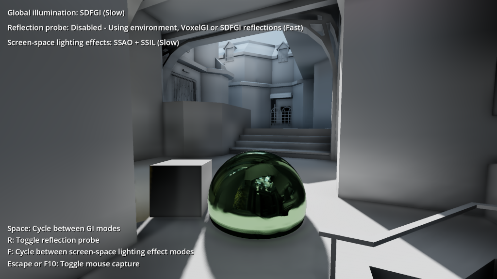
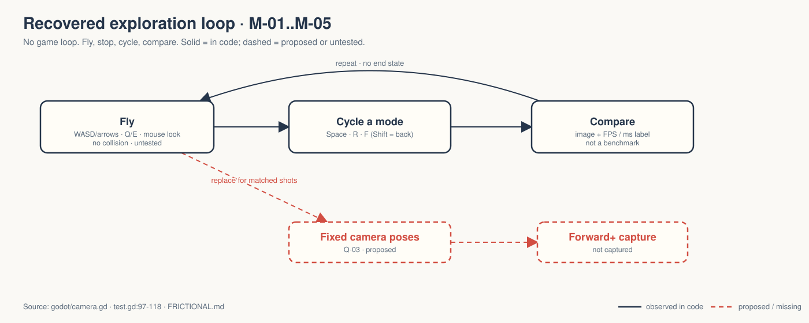
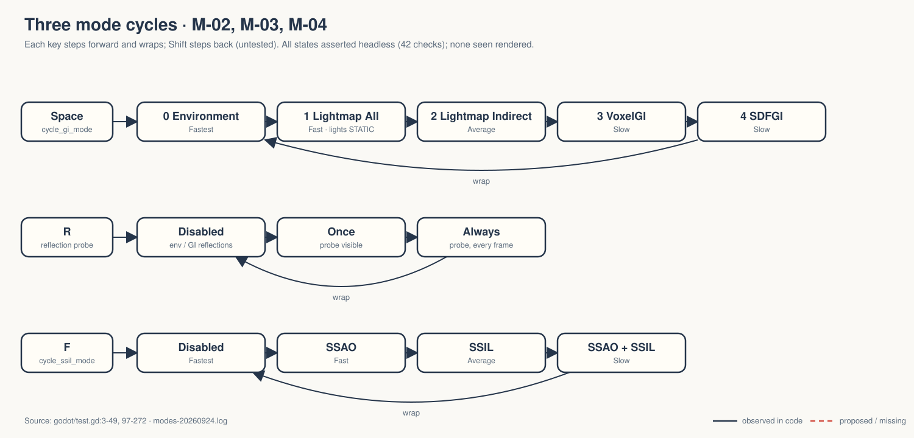

A free-flying camera inside one baked arena map, carrying a box and a mirror ball, cycling five GI modes, three reflection modes and four screen-space modes.
OBSERVED INFERRED MISSING
Tech demo, not a game. gate — unsigned at time of writing. → GDD.md

OBSERVED godot/screenshots/global_illumination.png — shipped with the Godot demo, not a Walker capture.

The camera flies through walls: no collision, no goal. OBSERVED camera.gd

Every label carries a cost word — the one design idea the code states outright.
Headless assertions on labels, node visibility, SDFGI / SSAO / SSIL flags. OBSERVED modes-20260924.log
"forward_plus" in a headless log is a property, not a picture. Camera, capture toggle, Shift-reverse and Compatibility are untested.
Q-01 film purpose · Q-02 pillars · Q-03 fixed poses · Q-04 help omits movement keys · Q-05 rebake procedure · Q-06 CORE · Q-07 Compatibility on camera
Pick three fixed camera poses before capture. Five GI modes compared from five different places compare nothing, and the free-fly damping is frame-rate dependent.